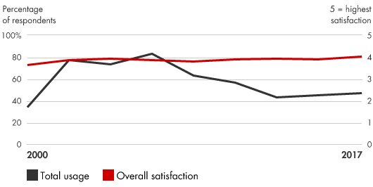
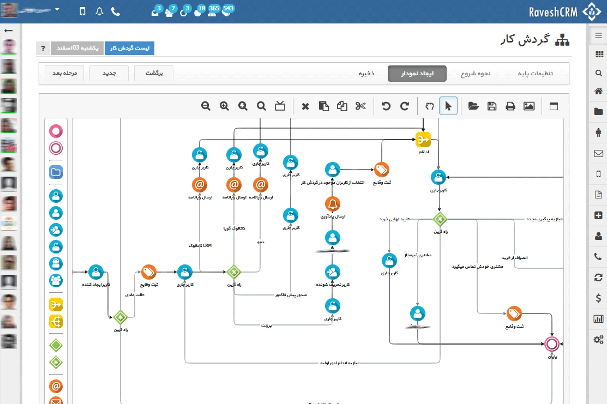

📘معرفی ابزار
مدیریت ارتباط با مشتریان (CRM) فرآیندی است که برای شناخت گروههای مشتریان خود استفاده میکنند و به سرعت خواستههای مشتری پاسخ میدهند. فنآوری CRM به شرکتها این امکان را میدهد تا مقادیر زیادی از دادههای مشتری را جمعآوری و مدیریت کنند و سپس استراتژیها را براساس این اطلاعات اجرا کنند. دادههای جمعآوریشده از طریق راهکارهای متمرکز مدیریت ارتباط با مشتری به شرکتها کمک میکند تا مشکلات خاص را در چرخه رابطه مشتریان خود حل کنند و روی زنجیره فعالیتهای مرتبط با هدفگذاری اولیه مشتریان و گسترش ارتباطات تجاری با آنها مدیریت بهتری داشته باشند. دادههای CRM همچنین اطلاعات جدید و مهمی در مورد نیازها و رفتارهای مشتریان ارائه می دهد و به آنها امکان می دهد محصولات متناسب با بخشهای مشتری هدف را تهیه کنند. اطلاعات جمعآوریشده از طریق برنامههای CRM اغلب راهحلهایی برای مشکلات خارج از عملکردهای بازاریابی یک شرکت، مانند مدیریت زنجیره تامین و توسعه محصولات جدید ایجاد میکند.
🆕بهروزرسانی ۱۴۰۵
این بخش در نسخهٔ آنلاین ۱۴۰۵ افزوده شده است. متن اصلی کتاب (آبان ۱۳۹۹) در بخشهای بعد بدون تغییر آمده است.
آمار و شواهد تازه
- طبق دادههای IDC (سال ۲۰۲۴) Salesforce با ۲۰٫۷٪ سهم بازار پیشتاز است؛ پس از آن Microsoft با ۵٫۲٪ و Oracle با ۴٫۰٪. در دادههای ۲۰۲۵ سهم Salesforce ۲۰٫۰٪ گزارش شده است. (منبع ثانویه؛ بر پایهٔ تعریف IDC از بازار.) (منبع: CRM Switch)
- بازار جهانی نرمافزار CRM در ۲۰۲۴ حدود ۱۰۰ میلیارد دلار برآورد شده است. (منبع: CRM Switch)
- همهٔ فروشندگان بزرگ (Salesforce با Agentforce، HubSpot با Breeze، Microsoft با Copilot) عاملهای هوش مصنوعی را در هستهٔ محصول قرار دادهاند. (منبع: CRM Switch، Salesforce)
چه چیزی تغییر کرده؟
CRM از «پایگاه دادهای که فروشنده پر میکند» به «سامانهای که خودش پیشنهاد میدهد و بخشی از کار را انجام میدهد» رفته است. این یعنی کیفیت و یکپارچگی داده مشتری، مهمتر از انتخاب برند نرمافزار است.
نمونه ابزارها و نرمافزارهای امروزی
نامها صرفاً نمونهاند و توصیه یا تبلیغ تجاری نیستند؛ شرایط دسترسی و تحریمها را برای سازمان خود بررسی کنید.
منابع این بخش
🧩فرآیند اجرا
- با تعریف نقاط درد۱ استراتژیک در چرخه ارتباط با مشتری شروع کنید. اینها مشکلاتی هستند که تاثیر زیادی بر رضایت و وفاداری مشتری میگذارند، جایی که راهحلها منجر به پاداش مالی برتر و مزیت رقابتی میشود.
- ارزیابی کنید که آیا دادههای CRM میتواند این نقاط درد را رفع کند. ارزش این اطلاعات را محاسبه کنید
- تکنولوژی مناسب را انتخاب کرده، و هزینه اجرای آن و آموزش کارکنان برای استفاده از آن را محاسبه کنید.
- ارزیابی کنید که آیا فواید اطلاعات مربوط به مدیریت ارتباط با مشتری از هزینههای مربوط به آن بیشتر است یا خیر.
- برای اطمینان از مشارکت پرسنل در برنامههای مدیریت ارتباط با مشتری، برنامههای تشویقی طراحی کنید. بسیاری از شرکتها کشف کردهاند که سازماندهی مجدد سازمان از گروههای محصول محور به سمت ساختار مشتری محور موفقیت CRM را بهبود میبخشد.
- پیشرفت و تاثیر CRM را اندازهگیری کنید. با نظارت فعال، مشارکت پرسنل کلیدی در برنامه مدیریت ارتباط با مشتری را کنترل کنید. علاوه بر این سیستمهای اندازهگیری را در دستور کار خود قرار دهید تا با استفاده از CRM بهبود سودآوری مشتری را ردیابی کنید. هنگامی که دادهها جمعآوری میشوند، اطلاعات را به طور گسترده با کارمندان به اشتراک بگذارید تا مشارکت بیشتر در برنامه را تشویق کنید.
💼موارد استفاده در کسبوکار
- انجام تحقیقات بازار بر روی مشتریان
- تولید پیشبینیهای فروش مطمئن تر
- هماهنگی اطلاعات بین کارمندان فروش و نمایندگان پشتیبانی مشتری و افزایش اثربخشی آنها
- توانمند کردن نمایندگان فروش از جهت اینکه قبل از تعیین قیمت، تأثیر مالی تنظیمات مختلف محصول را ببینند
- ارزیابی بازده برنامههای تبلیغاتی و هدایت هزینههای براساس آن
- ارایه اطلاعات مربوط به ترجیحات و مشکلات مشتری به طراحان محصول
- افزایش فروش با شناسایی و مدیریت سیستماتیک مشتریان بالقوه
- بهبود نگهداری مشتری۲
- طراحی برنامههای موثر خدمات مشتری
📈میزان محبوبیت در طی زمان

🧪نمونه ابزار / الگو

نمونه ابزار مدیریت ارتباط با مشتریان با قابلیت تعریف گردش کار، ایجاد داشبوردهای گزارشگیری و تحلیلی، و یکپارچه سازی با کانالهای مختلف ارتباطی با مشتریان (ایمیل، تلفن، گفتگوی آنلاین، ...)
⬇️چکلیست قابلدانلود
چکلیست اجرایی این ابزار را دانلود و در سازمان خود تکمیل کنید. گامها از فرآیند اجرای همین صفحه برداشته شدهاند و ستونهای مسئول، موعد و وضعیت برای پیگیری تیمی خالی گذاشته شده است.
⬇ دانلود چکلیست (Word) · مدیریت ارتباط با مشتریان📚مراجع مطالعه بیشتر
- Bain & Company, Customer Relationship Management: bain.com/insights/management-tools-customer-relationship-management
- PCMag, The Best CRM Software for 2019, https://www.pcmag.com/roundup/253275/the-best-crm-software
- Day, George S. “Which Way Should You Grow?” Harvard Business Review, July/August 2004, pp. 24–26.
- Dyché, Jill. The CRM Handbook: A Business Guide to Customer Relationship Management. Addison-Wesley Professional, 2001.
- Peppers, Don, and Martha Rogers. Managing Customer Relationships: A Strategic Framework. 2d ed. Wiley, 2011.
- Reichheld, Fred. Loyalty Rules! How Leaders Build Lasting Relationships in the Digital Age. Harvard Business School Press, 2001.
- Reichheld, Fred, with Thomas Teal. The Loyalty Effect: The Hidden Force Behind Growth, Profits, and Lasting Value. Harvard Business School Press, 1996.
- Rigby, Darrell K., and Dianne Ledingham. “CRM Done Right.” Harvard Business Review, November 2004, pp. 118–129.
- Rigby, Darrell K., Fred Reichheld, and Phil Schefter. “Avoid the Four Perils of CRM.” Harvard Business Review, February 2002, pp. 101–109.
معادلهای انگلیسی
- ۱Pain points
- ۲Customer retention